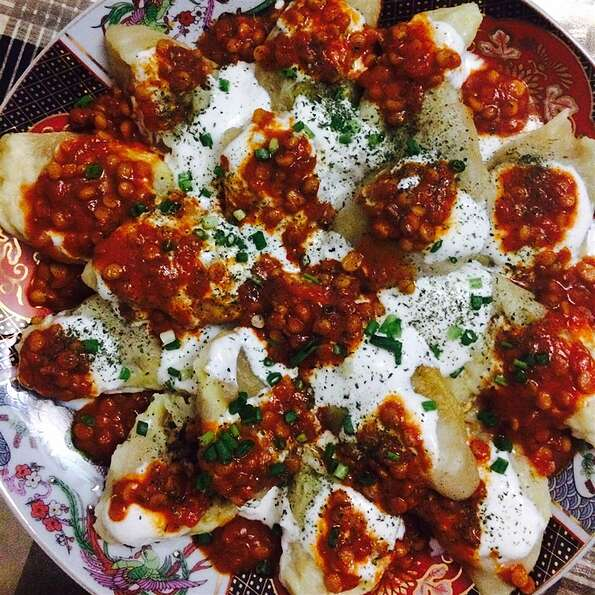

Afghan Beef Raviolis

Delicious raviolis pasta with unique Afghan flavors, spicy and delightful traditional food. Its preparation and ingredients elevate the glorious colorful dish.
Ingredients
- ¾ cup plain yogurt
- 1 teaspoon chopped fresh mint leaves
- 2 cloves garlic, crushed
- 1 pound ground beef
- 1 ½ cups chopped onion
- 1 cup water
- 1 carrot, grated
- ¾ teaspoon salt
- 1 teaspoon ground black pepper
- 1 ½ teaspoons ground coriander
- ½ teaspoon ground cumin
- 26 wonton wrappers
- 1 tablespoon tomato paste
- ⅛ teaspoon red pepper flakes
- 2 tablespoons water
- ½ cup dried yellow split peas
- ⅛ teaspoon red pepper flakes
- 1 teaspoon ground coriander
- ¼ teaspoon ground cumin
- 1 cube chicken bouillon
- 1 ½ cups water